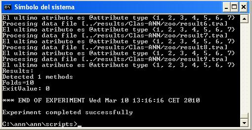

Launching RunKeel
When the user designs an experiment, a .ZIP file will be obtained containing all the files needed to run the experiment in any computer that has a Java Virtual Machine installed. It is necessary to extract the content of the compressed file and then you will obtain a directory called "experiment" (as you had called your experiment). Inside it, there is a new directory called "scripts" in which you can launch the RunKEEL application by typing java -jar RunKeel.jar in a console. Then, the experiment begins to run.
When it finishes, the user will obtain at the command prompt the message "EXPERIMENT COMPLETED SUCCESSFULLY":
